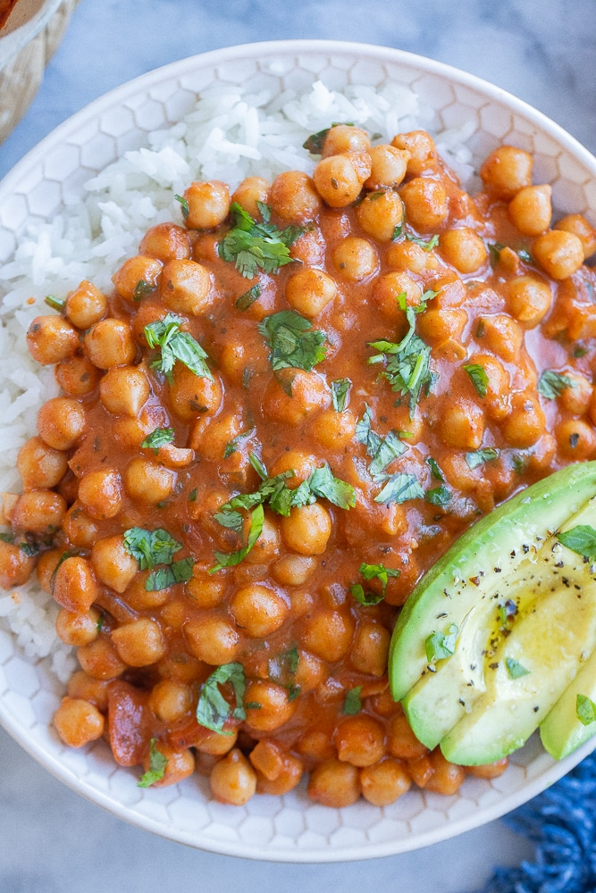

Smoky Chickpeas

Description
These smoky chickpeas have just the right amount of kick in them, and an impressive flavor that will have your friends and family coming back for seconds. Enjoy!
Ingredients
- 2 cups of cooked brown rice
- 2 cans of chickpeas
- 2 tsp smoked paprika
- 1/2 tsp chipotle pepper spice
- 3/4 tsp salt
- 1 1/4 unsweetened lite coconut milk
- 85g tomato paste
- 1/2 cup water
- 1/2 cup diced onion
- 4 tsp minced garlic
Steps
- Mix spices together in a small bowl and set aside.
- Drain and rinse chickpeas.
- Add water and onion to a medium-sized pot over medium-high heat. Wait for it to simmer, and then cook for 4 minutes.
- Add minced garlic and cook for 3 minutes, stirring throughout to keep the garlic from burning.
- Add coconut milk, spices, chickpeas and tomato paste. Stir to combine and lower heat.
- Once the mixture begins to simmer, set a timer and cook for 10 minutes. Stir occasionally to prevent burning.
- After 10 minutes, or once the mixture has thickened, remove from heat.
- Serve each portion over brown rice.